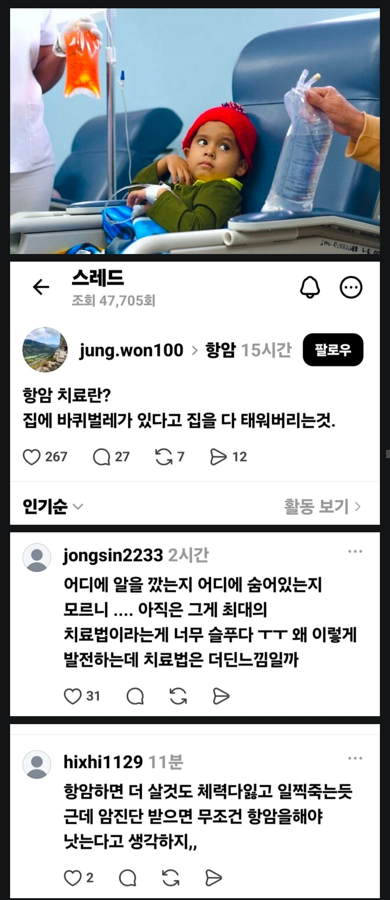

케바케인듯...

케바케인듯...
이거 닥터하우스란 오래된 미드(존나 잼남)에서 내용이 있는데 주인공 절친과 관련된 줄거리가 있음 마지막 엔딩까지 완벽한
잡스가 되고 싶구나 ㅋㅋㅋㅋ
항암치료 불쌍해서 어뜩해ㅠ (항생제 쳐먹으며)
제발 너도 항암치료 받지말길 바란다
저 지능인 애들은 항암 포함해서 그 어떤 치료도 거부하고 죽어주는게 전지구적으로 유익하다.
항암제가 진짜 독성이 강해서 구강이니 장 점막이 헐정도로 몸에 안좋기는한데 현대과학으로 암세포를 죽이는 건 그정도가 과학의 최선임. 뭐 크라이오나 중입자 같은건 제외하고.. 사람마다 달라서 몸에 맞지않거나 내성이 생기는 시기나.. 현대과학의 한계점은 분명하지만 그게 현재 인간이 할수있는 최선이기도함. 점점 나아져서 마치 감기치료처럼 나아지는 날이 왔으면 좋겠다.
그럼 항암 하지말고 산좋고 물좋은 자연에 들어가서 뭔 이름도 모를 풀떼기 달여먹으면서 살아봐 1000년은 살수있어
항암이 환자를 서서히 죽인다는디 진짜 헛웃음도 안나온다 그리고 뭔 의사들이 뭔 븅신들도 아니고 그냥 항암주사 냅다 꽂아버리는줄 아나 그거 한번 하기전에 받는 수많은 검사에 환자 상태 고려해서 투약기간 조절하고 효과 있는지 없으면 약도 바꿔서 다시 한번 체크 하고 항암중에도 간호사들이 계속 상태체크 하는데 뭔 항암이 스팀팩인줄 아나 이것들이
대충 맞는 말인데? 요즘 표적항암제나 면역항암제가 잘 나오기는 해도 여전히 일선에서 쓰이는 항암제중에 상당수가 "바퀴벌레가 있는 집을 통째로 태우는" 방식 맞음
왜 항암제 먹으면 입안이랑 장 점막이 헐겠냐? 암세포는 빠르게 분열하는데 항암제가 이 점을 노림. 근데 구강과 장 점막의 세포도 분열 속도가 빨라서 같이 피해보는거임. 그거 말고도 전신적인 독성이 명백하게 있음. 그래도 해야하니까 하는거지
그리고 항암 주사중에 대증치료, 용량 조절, 부작용이 심할 경우 투약 계획 변경을 하기는 해도 그런 중재의 목적 자체가 항암을 끝까지 진행하기 위해선데 뭐때문에 화나신거임
특정 부위에 바르거나 하는 약 말고 먹거나 주사로 투여하는 약 중에 다양한 부작용이 없는 약이 얼마나 돼? 크고 작은 위험에도 불구하고 필요하다고 판단하니까 주의깊게 투여하는 거지.
힘들고 절망한 사람들에게 잘못된 선입견을 주는 무책임한 언행이 아니면 뭐임?
저게 대충 맞는 말이면 태아는 엄마에게 기생하는 유기물이니 생기는 족족 낙태하라는 말도 대충 맞는 말이네.
부작용 없는 약은 없지만 그 중에서도 표적항암제를 제외한 항암제는 태생부터가 위험할 수 밖에 없는 약이니까 하는 말임. 그리고 난 그럼에도 항암은 해야한다고 생각함. 근데 할거면 본인이 쓰는 약이 어떤 약이고 어떤 부작용이 있을지는 알아야지. 적어도 기본적인 항암제의 기전에 대해서라면 첫번째 두번째 다 틀린 말이 아닌데
사람들이 그걸 몰라서 화내고 있겠냐.
암환자 보호자들은 반쯤 전문가가 된다고.
넌 약 기전만 알지 니 댓글이 열받는 포인트는 모르고, 약 부작용은 알아도 저 본문글의 부작용은 모르는구만.
요즘 항암은 그래도 멀쩡하게 잘 하던데 생각보다.
요즘 기술 좋다미
바퀴벌레가 아니라 나무집의 흰개미지
항암해봐서 아는데 초가삼간 태우는 비유랑 원리가 비슷하긴함 ㅋㅋ
세포독성 항암제 작용 기전이 빠르게 증식하는 모든 세포(암세포포함)을 공격하는건데 그게 모발세포(탈모)일수도있고 구강세포(구내염), 위장벽 세포..혹은 수족(손발) 세포일수도있음. 하지만 무서워하진 않아도됨. 약에따라 다르지만 현대의학이 발전해듯이 세포독성항암제 처방시 부작용 방지 약도 다 처방해줌. 항암시 건강한 일반인처럼야 될 수 없겠지만 난 여행도가고 피티도 받고 대머리인거빼면 일반인이였음 ㅋㅋ 그리고 암의 아형에따라 표적항암(암만 공격)제도 많이 있으니까 걱정 ㄴㄴ . 항암해서 뒤질것같다? 득보다 실이 많으면 약의 효과는 없는 경우니까 그땐 애초에 말기암이고 병원에서 알아서 호스피스 권유함..
지금은 건강하시죠? 그래도 쉽지않았을거같은데 대단하시네요 ㄷㄷ
항암해서 빨리 죽을 수준이면 이미 치료가능성이 없는 말기암환자 아닌가?
항암이 집을 다 태우는건 맞는데
암이 그냥 바퀴벌레가 아니고
집을 태우는 정도가 아니면 잘 죽지도않는 슈퍼 바퀴벌레이면서
물리면 사람이 죽는 맹독 바퀴벌레인거지
어딜가나 투정과 불만스러움만 있고 딱히 해결책은 없는 병신새끼들 항상 있음.
완벽한 방법이 없는 와중에 그나마 신경써서 하고 있지만 이새끼들은 혼자 망상하면서 이 방법은 완벽하지 않다 다른 방법을 강구해야돼.. 근데 나는 모르겠고 누군가 좀 해라
병신마인드 보통 복지쪽이나 정치쪽 얘기할때 많지
아부지 폐암판정받고 항암 한번 했는데 힘들어 하시더니 입맛도 떨어지고 기력도 떨어지고
그러다 병원 입원하셔서 그냥 3개월만에 돌아가시긴했음
그냥 항암 하지말껄 그랬나 싶긴한데 또 그럴순 없고
안했어도 후회했을꺼야
하고싶어도 못하는 사람도 있는데 최선을 다한거다...
암치료가 항암제나 방사선 같은 전신 치료만 있는게 아냐.. 심지어 요샌 표적 치료제도 나오는 마당에..
뭔 개무식한 소리냐. 요즘 항암제는 다 표적항암제 쓰고 부작용이 다 다르긴 하지만 옛날처럼 융단폭격하는 건 원발미상암 같은데나 쓰는 거임. 전이 다 돼서 가망 없는 상태 아니면 항암치료 받는 게 맞음.
특정 변이가 있는 경우나 표적항암제 사용하지 우리나라처럼 의료비 부담 적고 선진 의료체계가 갖춰진 나라에서도 여전히 전체 환자의 절반 이상은 비특이적인 항암제를 사용함. 그것도 최근에 급격하게 증가해서 그런거야
ㄹㅇ표적항암이랑 비특이 반반임. 지가 개무식한 뜬구름잡는 소리하는 듯
누가 안 권함? 이거보고 누군가 항암 포기하면 책임질 수 있음?
저 나라는 교육이 불법임
암을 절제해냈어도, 전이 위험때문에 항암은 해야함
4기까지 가서 가망 없으면 몰라도 항암을 왜 안해... 살수 있는 가능성이 있는데
지랄하네 시발 니 엄마가 암 걸려봐야 저딴소리 안 나온다.
부모가 암판정 받을 때 심정을 알기나 하냐?
아 그럼 너 걸리면 꼭 산속가서 약초달여먹고 맨발걷기해라. 병원 가는지 지켜볼테니까.
잡스가 부릅니다
"나와 같다면"
모더나야 믿는다.
틀린말은 아닌데 뭔가 많이 빠졌잖아 저 새끼들
저 정도 가면 말기라 오히려 그냥 있다가 가는것보다 못해서 안하는게 나은거지 초기는 해야지 멀쩡하게 살 기회를 주는데 왜 버려
차악임
한의사같은 소리하고 있네ㅜ
?
보통 주위사람 항암하다 돌아가는거 본 사람들이긴 할거임
부질없다싶긴해 가장 생존확률 높은 방법을 연구해서 나온거지만 그 과정의 힘듦이 결국 확률 못뚫고 죽으면 의미가 없거든
항암제라는게 너무 독해서 옆자리 노인들 몸이 약해지는게 보이더라
하루만에 머리 다 빠지고 못 움직이고 못 먹고 침대에서 못 일어나다가 섬망 오고
현재 가장 최선의 치료법이긴 한데 몸이 못 받쳐주면 고민해 볼 필요는 있을거 같음
나는 한단계 발전한 표적항암제 6년째 먹고 있는데
온 얼굴에 여드름이 나고 하루종일 배아프고 설사 수십번씩 하는 부작용이 있는데 그래도 1세대 항암제보단 나음
아 지금은 몇년에 걸쳐 치료도 되고 해서 가장 낮은 용량을 먹고 있고 얼굴도 깨끗한 편이고
설사도 잘 안 하고 쳐음보는 사람눈엔 운동 좋아해 보이는 중년으로 알고 있음
자연치료하다 암세포 너무 커져서 수술 못하게 되는 경우도 종종 있음
안아키같은 새끼들 ㅈㄹ하고 있네